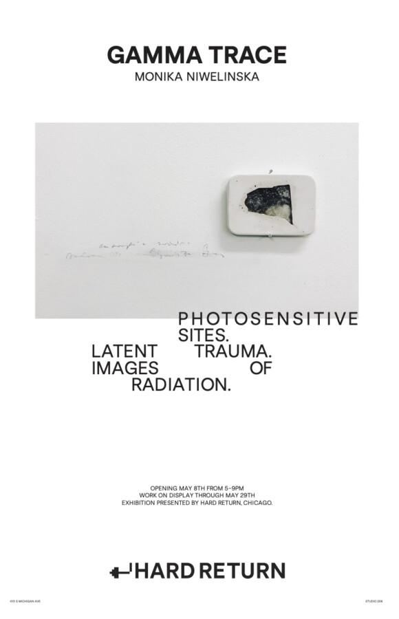

GAMMA TRACE: Photosensitive Sites. Latent Trauma. Images of Radiation.
GAMMA TRACE: Photosensitive Sites. Latent Trauma. Images of Radiation.
Gamma Trace investigates relationships between photography, radiation, material trace, and disappearance through radiographic exposures, unstable photographic emulsions, photo-intaglio prints, and installation-based works. Approaching photography as a fluid and chemically unstable process rather than a fixed representation, the exhibition explores the concept of the entropic image – an image subjected to gradual transformation, decay, and dissolution.
Central to the exhibition is the series [γ] / gamma trace, realized at the Trinity Site in New Mexico, site of the first atomic bomb test. Produced through the direct exposure of photosensitive plates to gamma radiation emitted from contaminated ground, the works transform invisible radiation into material photographic traces. Oscillating between imprint, scar, and indexical record, the resulting images function as fragile manifestations of nuclear trauma.